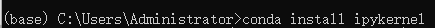

1 Win10系统TensorFlow-gpu2.2安装
Tensorflow-gpu2.2版本、GPU显卡驱动版本、CUDA版本、cuDNN版本，互相匹配是唯一原则。TensorFlow-gpu 2.2 可以很好的兼容CUDA10.1版本（不兼容的话，需要从源码安装TF，比较麻烦）。因此建议选择CUDA10.1，对应的CuDNN版本为7.6.5，再根据网址中的对应关系选择合适的显卡驱动程序。

图1.1 CUDA和显卡驱动的适用关系对照表
为了安装顺利，需要退出像360安全卫士这样的防护软件。
1.1 显卡驱动
1.1.1 选择版本
电脑桌面，右击，选择NVIDIA控制面板，

GPU显卡：GeForce RTX 280 TI；NVIDIA 显卡驱动：432.00
下载图示：

1.1.2 安装
选择合适版本，默认安装即可。安装完成后查看驱动版本进行确认。
1.2 CUDA工具包
1.2.1 选择版本
点击网址，选择适合的CUDA下载

1.2.2 自定义安装
默认的安装路径，不要更改，保存即可。

注意选择自定义安装，按照下图取消某些默认的选择，点击下一步即可。
1.2.3 添加环境变量
CUDA_INSTALL_PATH就是刚才保存的cuda的安装路径。
\NVIDIA GPU Computing Toolkit\CUDA\v10.1\bin - l
\NVIDIA GPU Computing Toolkit\CUDA\v10.1\libnvvp \NVIDIA GPU Computing Toolkit\CUDA\v10.1\extras\CUPTI\libx64 \NVIDIA GPU Computing Toolkit\CUDA\v10.1\lib\x64
示图：
\NVIDIA Corporation\NVSMI
\NVIDIA GPU Computing Toolkit\CUDA\v10.1 \NVIDIA Corporation\CUDA Samples\v10.1
1.2.4 验证安装
打开cmd，运行nvidia-smi,
1.3 cuDNN
1.3.1 选择版本
注册完成后，下载即可。
1.3.2 移动文件

将三个文件中的文件(bin\cudnn64_7.dll，include\cudnn.h，lib\x64\cudnn.lib)，对应的移动到
1.4 安装Anaconda
1.4.1 下载
下载网站页面下方，选择适合系统的版本进行安装。安装的时候注意选中添加路径的方框。
1.4.2 验证安装
打开Anaconda prompt

出现

运行命令“conda”，显示

说明安装正确。
1.4.3 conda创建虚拟环境
运行命令“conda create -n 虚拟环境名称 python=版本号”
1.4.4 激活虚拟环境
运行命令“activate 虚拟环境名称”
1.5 运行方式
1.5.1 Jupyter Notebook
1.5.1.1 建立python3.8虚拟环境
命令“conda create -n 虚拟环境名称 python=3.8”

验证安装完毕
1.5.1.2 安装tensorflow-gpu 2.2.0 版本
在刚才的虚拟环境下，利用豆瓣源下载

验证安装

1.5.1.3 安装ipython
退出激活的虚拟环境

安装
1.5.1.4 安装jupyter notebook
安装
1.5.1.5 安装ipykernel

在上面建立的虚拟环境下创建kernel文件 “conda install -n gwt ipykernel” 激活虚拟环境 “activate gwt” 将虚拟环境写入Jupyter notebook的kernel里，并设置显示名称。 python -m ipykernel install --user --name gwt --display-name "GWT_OD"
1.5.1.6 更改文件保存地址
Jupyter notebook文件默认保存的路径是C盘，可通过下面的方式更改。打开Anaconda Prompt后，首先运行盘符，进入相应的盘即可。
1.5.1.7 验证安装
激活虚拟环境后，输入下面命令，会自动打开默认的浏览器。
选择上面设定的显示名称。
1.5.2 PyCharm
1.5.2.1 下载免费社区版本
下载网址，建议选择版本2019.3.5。
1.5.2.2 设置编译器
File—setting

将这个编译器更改为前面虚拟环境中的编译器python.exe，编译器路径：Anaconda的安装路径\envs\虚拟环境名称，步骤如下。


点击ok。
1.5.2.3 验证
import tensorflow as tf
import sys
sess = tf.compat.v1.Session(config=tf.compat.v1.ConfigProto(log_device_placement=True))
print('tensorflow版本', tf.__version__)
print('python版本', sys.version)

1.5.3 错误问题汇集
1.5.3.1 出现.pywrap_tensorflow_internal import *错误

选择对应版本下载、安装即可。